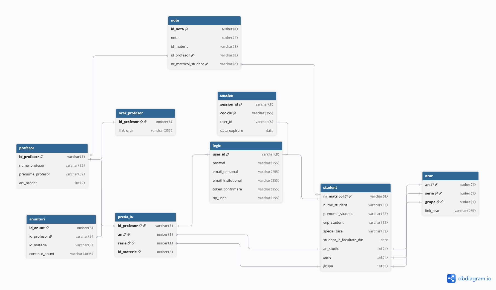
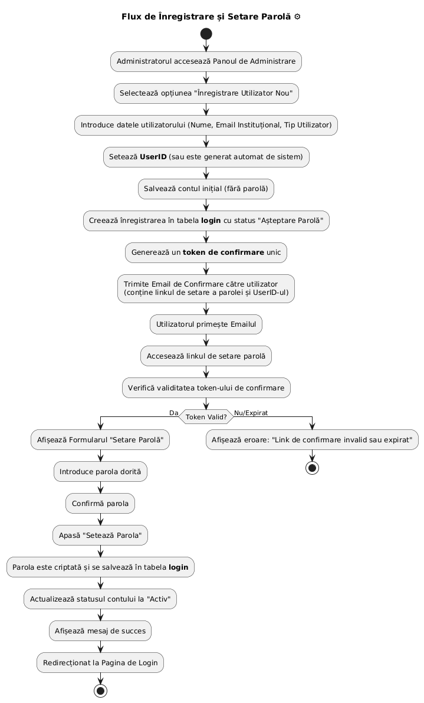
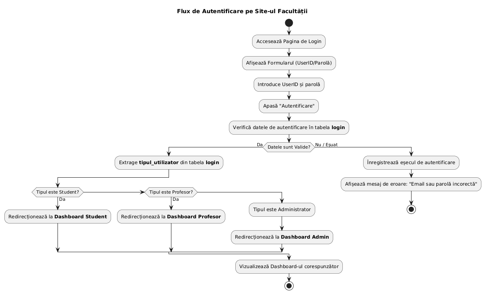
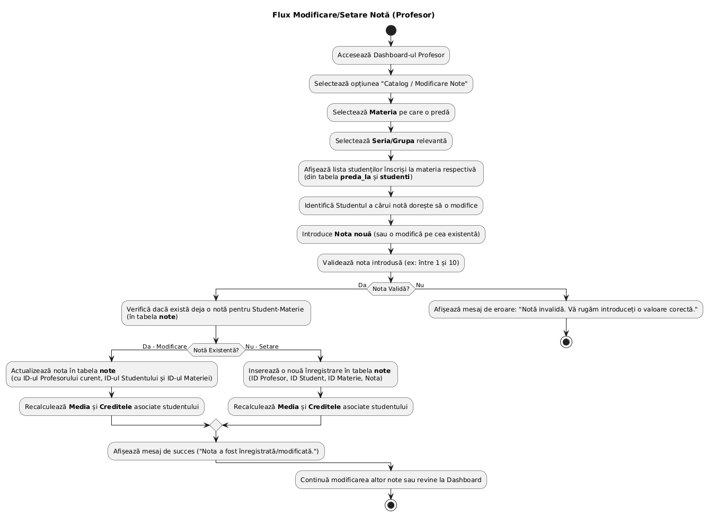

Proiect DAW: Site-ul unei facultati
Sindelaru Stefan-Cristian, 244
Proiectul meu abordeaza site-ul unei facultatii, similar cu carnet.unibuc.ro, unde studentii isi vor putea verifica notele, orarul, sau sa contacteze profesori sau secretariatul, si profesorii pot posta notele, anunturi in legatura cu materia lor.
Aplicatia se bazeaza pe interactiunea dintre utilizatori, catalog si anunturi.
Utilizatorii:
- Exista 3 tipuri de utilizatori: studenti, profesori, si administratori
- administratorii inregistreaza conturile de tip student si profesor, cei din urma primind un e-mail unde le este "confirmat" contul si oferita sansa de a isi seta parola
- odata autentificat, utilizatorului ii este salvata sesiunea pentru o perioada de timp printr-un cookie, timp in care utilizatorul nu trebuie sa se mai autentifice din nou
- un student poate verifica catalogul online, unde isi va vedea orarul, notele, media, creditele si profesorii de la fiecare disciplina, ce difera de la serie la serie
- profesorii pot modifica notele studentilor, posta anunturi si verifica propriul orar.
- administratorii pot posta anunturi pe un tab propriu, deoarece vizeaza intreaga facultate; de asemenea, pot modifica conturile studentilor si a profesorilor odata ce incepe urmatorul an de facultate, schimband datele astfel incat unii profesori acum predau la alte serii, sau alte materii, iar studentilor le corespund astfel profesori diferiti. De asemenea, ei pot sterge, individual sau in masa, anunturile, pentru a reseta site-ul o data ce se schimba anul si anunturile vechi nu mai sunt relevante.
- orice utilizator, profesor sau student, poate trimite mail unui administrator
Catalogul:
- este modificat de profesori, si poate fi vazut de orice tip de utilizator
- un student isi poate vedea doar propriile note, un profesor poate vedea notele studentilor sai numai la materia sa, iar administratorul poate vedea toate notele tuturor studentilor
- calculeaza automat creditele la o anumita materie, si media unui student la toate materiile, verificand totodata daca studentul a trecut
- fiecare nota este asociata in baza de date materiei, studentului si profesorul. are relatie one-to-many cu tabela de profesori dar si cu tabela de studenti, fiecare student avand mai multe note la mai multe materii si fiecare profesor trimitand mai multe note fiecarui student.
- totusi, fiecare student poate avea doar o singura nota la o materie respectiva
Anunturile:
- anunturile administrative sunt vizibile tuturor utilizatorilor
- anunturile profesorilor sunt asociate unui curs, si numai studentii care participa la acel curs predat de acel profesor pot vedea aceste anunturi
Tabele:
- studenti, salveaza datele studentilor
- profesori, salveaza datele profesorilor
- anunturi, contine anunturile pentru materii sau generale si continutul lor
- note, salveaza notele fiecarui student la fiecare materie, servind de asemenea ca tabel asociativ intre profesori si studenti
- preda_la, tabel many-to-one pentru fiecare profesor, reprezentand ce materie preda profesorul fiecarei serii
- orar, salveaza orarul fiecarei grupe cu un link la o imagine
- orar_profesor, salveaza orarul fiecarui profesor tot cu un link la o imagine
- login, salveaza encriptat parola fiecarui utilizator, tipul de utilizator, id-ul de utilizator, mail-ul institutional si mail-ul personal
- session, memoreaza cookie-ul fiecarei sesiuni pentru un utilizator si elimina cookie-urile vechi pentru utilizatorul respectiv odata ce se adauga unul nou (incepe o sesiune noua)
Fluxuri:
- inregistrare 
- autentificare 
- modificare nota 
- postare anunturi